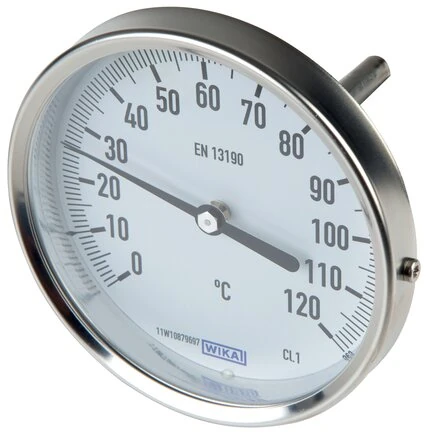

Đồng hồ nhiệt độ lưỡng kim (bimetal thermometer) WIKA lắp đúng thì đọc số rất dễ, nhưng chọn sai kiểu chân hay chiều dài que đo lại khiến mặt số quay lệch hướng người đọc hoặc đo sai nhiệt. Ba yếu tố quyết định lắp vừa và đo đúng là: kiểu chân (đứng/ngang), chiều dài que đo (insertion length) và chuẩn bản (Bund) định vị. Fast Group Engineering là đại lý cung cấp hàng chính hãng WIKA (Germany) tại Việt Nam.

Gợi ý chọn nhanh
- Cần đọc nhiệt độ tại chỗ hoặc đưa tín hiệu nhiệt về hệ thống.
- Cần chọn bimetal, RTD Pt100, transmitter hoặc thermowell.
- Cần thay thế theo chiều dài thân nhúng và kiểu chân.
- Dải nhiệt, chiều dài stem và đường kính thân.
- Kiểu chân, ren, vật liệu và môi chất.
- 2/3/4-wire, output 4-20 mA hoặc yêu cầu thermowell.
- Danh mục đồng hồ nhiệt độ WIKA.
- Bài bimetal thermometer.
- Bài RTD Pt100 và thermowell.
Tóm tắt nhanh
- Chân đứng (senkrecht): que đo thẳng xuống, mặt đọc đứng — lắp trên đường ống đứng hoặc đáy bồn.
- Chân sau/ngang (waagerecht): que đo vuông góc, mặt đọc trực diện — lắp trên đường ống ngang.
- Bản (Bund) 18 mm: phần vai/gờ tiêu chuẩn để lắp và định vị.
- Chiều dài que đo: phải đủ sâu vào môi chất để đo đúng.

Chân đứng hay chân ngang — chọn theo hướng lắp
| Kiểu chân | Tiếng Đức | Mặt đọc | Lắp ở đâu |
|---|---|---|---|
| Chân đứng | senkrecht | Thẳng đứng | Ống đứng, đáy bồn, đọc từ trên |
| Chân sau/ngang | waagerecht | Trực diện | Ống ngang, đọc thẳng người vận hành |
Nguyên tắc vàng: chọn sao cho mặt số hướng về phía người đọc sau khi lắp, đồng thời que đo nhúng đúng vào dòng môi chất. Hãy hình dung vị trí thực tế trên đường ống trước khi đặt hàng — một đồng hồ chân đứng lắp lên đường ống ngang sẽ khiến người vận hành phải cúi hoặc nghiêng đầu mới đọc được, rất bất tiện trong vận hành hằng ngày.
Chiều dài que đo (insertion length) quan trọng thế nào?
Que đo phải đủ sâu để phần cảm biến nằm hẳn trong dòng môi chất, nếu không nhiệt sẽ bị dẫn ra ngoài theo thân que và làm sai số đọc. Đây là lỗi rất phổ biến khiến đồng hồ đọc thấp hơn nhiệt thực:
- Chiều dài phổ biến: 100 / 160 / 250 mm và các mức khác.
- Quy tắc tham khảo: nhúng tối thiểu khoảng 10 lần đường kính que vào môi chất.
- Nếu dùng thermowell, chiều dài que phải tính theo chiều sâu của thermowell để đầu cảm biến chạm đáy ống bảo vệ.
Với đường ống nhỏ, có thể cần lắp xiên hoặc dùng khuỷu để đảm bảo đủ chiều sâu nhúng mà không chạm thành ống đối diện.
Bản (Bund) 18 mm là gì?
Bund là gờ hoặc vai định vị trên thân đồng hồ, với kích thước tiêu chuẩn phổ biến là 18 mm, dùng để lắp cố định và định hướng thiết bị. Nhiều dòng bimetal WIKA sử dụng chuẩn Bund 18 mm; khi đặt hàng cần nêu rõ để khớp với phụ kiện lắp và thermowell tương ứng, tránh trường hợp thiết bị và ống bảo vệ không ăn khớp cơ khí.
Cách chọn (Checklist)
- [ ] Kiểu chân: đứng (senkrecht) hay ngang (waagerecht) theo hướng lắp.
- [ ] Chiều dài que đo: 100 / 160 / 250 mm...
- [ ] Chuẩn Bund 18 mm hay chuẩn khác.
- [ ] Đường kính mặt: 63 / 100 / 160 mm.
- [ ] Dải nhiệt & vật liệu (Industrie/Chemie).
- [ ] Có dùng thermowell không (nên có với process áp lực).
Sai lầm thường gặp khi chọn
Ba lỗi hay gặp nhất là: chọn nhầm kiểu chân khiến mặt số quay đi hướng khác; chọn que quá ngắn khiến đầu cảm biến không ngập đủ và đọc sai; và bỏ qua thermowell ở đường ống áp lực, khiến việc thay đồng hồ phải dừng cả hệ thống. Cả ba đều có thể tránh được nếu xác định rõ vị trí lắp và điều kiện process ngay từ khâu hỏi giá.
Bimetal, đồng hồ khí hay cảm biến điện tử — chọn loại nào?
Đồng hồ nhiệt độ lưỡng kim là lựa chọn phổ biến để đọc nhiệt tại chỗ vì bền, không cần nguồn điện và giá hợp lý. Tuy nhiên không phải ứng dụng nào bimetal cũng là tối ưu. Với dải nhiệt rất rộng hoặc cần phản ứng nhanh, đồng hồ nhiệt kiểu khí (gas-actuated) có thể phù hợp hơn nhờ khả năng lắp cảm biến ở xa mặt đọc qua ống mao dẫn. Còn khi cần đưa tín hiệu nhiệt độ về PLC/DCS để giám sát hoặc điều khiển tự động, bimetal không đáp ứng được — lúc đó phải dùng RTD Pt100 hoặc temperature transmitter phát tín hiệu 4–20 mA. Một cách bố trí thường gặp là lắp song song cả bimetal (đọc tại chỗ) và Pt100 (đưa tín hiệu về hệ thống) trên cùng một điểm đo, để vừa có chỉ thị trực quan cho người vận hành vừa có dữ liệu cho phòng điều khiển.
Đọc nhanh ký hiệu tiếng Đức trên đồng hồ nhiệt
Vì WIKA là hãng Đức, nhãn đồng hồ nhiệt độ hay dùng thuật ngữ tiếng Đức. Nắm vài từ khóa giúp bạn tự đọc cấu hình: senkrecht là chân đứng, waagerecht là chân sau/ngang, Einbaulänge hoặc Schaftlänge là chiều dài que đo, Bund là gờ định vị, và Schutzrohr là ống bảo vệ (thermowell). Khi đối chiếu bản vẽ hoặc nameplate cũ, những từ này thường là chìa khóa để xác định đúng cấu hình cần đặt thay thế. Nếu không chắc, chỉ cần gửi ảnh nhãn và mô tả vị trí lắp, chúng tôi sẽ dựng lại cấu hình chính xác.
Bảo trì và kiểm tra định kỳ
Đồng hồ nhiệt độ lưỡng kim gần như không cần bảo trì, nhưng với các điểm đo quan trọng nên kiểm tra định kỳ vài việc đơn giản: quan sát kim có bị kẹt hay lệch điểm không, kiểm tra que đo và thermowell có bám cặn hoặc ăn mòn không, và so sánh nhanh với một thiết bị chuẩn khi nghi ngờ sai số. Nếu đồng hồ đọc lệch rõ rệt, thường nguyên nhân là que đo không ngập đủ, thermowell bám bẩn cách nhiệt, hoặc thiết bị đã quá tuổi thọ và cần thay. Việc lập lịch kiểm tra giúp phát hiện sớm trước khi sai số ảnh hưởng đến quá trình.
Câu hỏi thường gặp
Lắp sai kiểu chân có đọc được không?
Đọc được, nhưng mặt số có thể lệch hướng và khó quan sát — nên chọn đúng ngay từ đầu.
Que quá ngắn ảnh hưởng gì?
Cảm biến không nằm trong dòng môi chất, gây sai số nhiệt do dẫn nhiệt theo thân que.
Có cần đúng chuẩn Bund 18 mm không?
Cần, nếu ghép phụ kiện hoặc thermowell theo chuẩn tương ứng; hãy nêu rõ khi đặt hàng.
Cần tư vấn hoặc báo giá đồng hồ nhiệt độ WIKA?
Gửi kiểu chân, chiều dài que, dải nhiệt và Ø mặt để nhận báo giá trong 24h.
- Email: minhduc@fastgroup.vn · Zalo: (+84) 938 888 958
Fast Group Engineering – đại lý cung cấp hàng chính hãng WIKA (Germany) tại Việt Nam.
Bài liên quan: [Đồng hồ nhiệt độ bimetal WIKA] · [Industrie vs Chemie] · [Thermowell/Schutzrohr] · [RTD Pt100 WIKA]